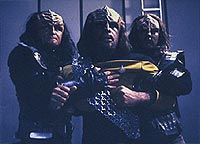
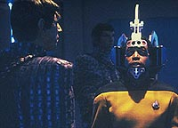
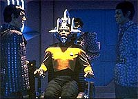
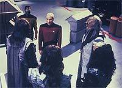
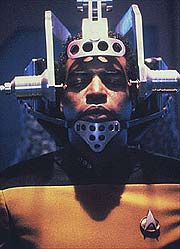

|
MANCHETE
DO EPISÓDIO
Geordi
é reprogramado por Romulanos
para minar aliança Federação-Klingon
Episódio
anterior | Próximo
episódio
Sinopse:
Data Estelar: 44885.5.
A caminho de férias em Risa, Geordi é sequestrado pelos Romulanos
e submetido a um procedimento de lavagem cerebral. Enquanto um sósia
é enviado para substituí-lo no planeta, Geordi é forçado a
passar por uma dolorosa série de experiências criadas para colocá-lo
sob controle Romulano.
 Enquanto
isso, a USS Enterprise é enviada para escoltar o embaixador Klingon
Kell até o sistema Kriosiano, onde uma das colônias Klingons está
lutando por independência. O governador de Krios, Vagh, acusa a
Federação de ajudar os rebeldes secretamente. Embora Picard negue
a acusação, Vagh apresenta armas capturadas junto aos rebeldes que
parecem ser da Federação.
Quando Geordi retorna, ele não tem nenhuma lembrança do que
aconteceu com ele, pois sua memória foi substituídas pelas experiências
de seu sósia em Risa. Logo após sua chegada, Data detecta a presença
de emissões de banda E intermitentes, comumente associadas a
transmissões Romulanas. O andróide tenta determinar a fonte das
emissões e trabalha com Geordi na análise das armas rebeldes. Os
dois logo percebem que os rifles foram manufaturados por Romulanos
para parecerem como armas da Federação.
Picard supõe que os Romulanos estariam tentando destruir a aliança
entre a Federação e o Império Romulano, o que parece acalmar os
ânimos de Vagh. Mas não por muito tempo --logo depois o governador
volta a contatar Picard e informá-lo de que os Klingons
interceptaram um carregamento de armas a Krios, originado da
Enterprise. Um exame de Data confirma que um transporte não-autorizado
foi feito a partir da área de carga, mas os chips de memória no
computador foram apagados para esconder a identidade do responsável.
 Picard
inicia uma investigação, e naves de guerra Klingons se descamuflam
e cercam a Enterprise. O embaixador Kell se oferece para ir a Krios
e convidar Vagh para acompanhar a investigação de perto, com o
objetivo de convencê-lo das boas intenções da Federação.
Kell chama Geordi em seus aposentos e fica claro que o engenheiro
está sob o comando do embaixador. Ele o programou para transportar
as armas e agora o ordena a matar Vagh quando ele vier a bordo da
nave, alegando estar agindo em nome da Frota Estelar.
A transmissão de Kell para Geordi produz outra emissão de banda E,
que permite que Data descubra que o embaixador está por trás
delas. O andróide rapidamente deduz o que está acontecendo e
consegue impedir Geordi justamente no momento em que a tentativa de
assassinato iria ocorrer. Kell é exposto como um traidor
conspirando com os Romulanos e é colocado sob custódia de Vagh.
Com a guerra evitada, resta apenas um trabalho à conselheira Troi:
restaurar as memórias e a saúde mental do engenheiro-chefe da
Enterprise.
Comentários:
 "The
Mind's Eye" apresenta uma trama de primeira linha, com
elementos variados e interessantes, mas uma coisa que certamente ele
abre mão é de uma alta dose suspense. A princípio, poderíamos
pensar que trata-se de um erro por parte dos roteiristas de nos
contar de antemão o que está se passando na Enterprise, em vez de
permitir que descubramos junto com Data, ao final da história, o
que está havendo.
Na verdade, essa opção deles é perfeitamente defensável --a idéia
não era fazer um episódio de mistério, mas uma trama política. O
foco não está em descobrir a ação dos Romulanos, mas sim
convencer Vagh e os Klingons de que a Federação não está agindo
contra seus interesses.
Nesse sentido, o grande esforço é fazer com que a corrida da
tripulação para desvendar o mistério antes que seja tarde demais
é mais do que suficiente para dar ao episódio a injeção de
adrenalina de que ele precisa, sem grandes doses de ânimo à la
Hitchcock.
A caracterização dos elementos da trama está muito bem feita. O
embuste é tão sórdido e maquiavélico que praticamente mostra uma
tarja "Made in Romulus" nele. A participação do
embaixador Klingon na fraude, como aliado Romulano, é muito bem
colocada, já criando um pano de fundo para a história que se
desenrolaria no final desta temporada, quando uma guerra civil é
instaurada entre duas facções em luta pelo poder no Império
Klingon.
 Assim
também funciona a primeira aparição de Sela, a misteriosa filha
de Tasha Yar com um Romulano, fruto dos eventos relatados em "Yesterday's
Enterprise", da terceira temporada. Ela teria um papel
ainda mais importante durante a guerra civil Klingon.
Curiosamente, embora Geordi seja o ponto central da história, o
enredo faz dele apenas um marionete na mão do embaixador, perdendo
uma oportunidade de desenvolver o personagem. o fenômeno não é
sem precedentes. Em "Identity
Crisis", a história também usou Geordi como foco,
justamente de um modo em que ele acaba sendo pouco aproveitado. Mas
no caso presente, não há dúvida de que vale a pena sacrificá-lo,
só para privilegiar um enredo sensacional como este.
O conflito de Worf com os Klingons, em razão de sua descomendação
(vista em "Sins of the Father"), também é
interessante. Aliás, a título de nota, a sequência de episódios
com temática Klingon talvez seja o maior (e melhor) exemplo do bom
uso de continuidade em uma série visto em A Nova Geração.
Picard também tem algum destaque, ao precisar lidar com uma difícil
situação diplomática --principalmente logo após ele impedir
Geordi de matar o governador Vagh. Felizmente Data está lá para
explicar tudo.
A exposição de Kell junto aos Klingons é uma das grandes cenas
deste episódio. O ridículo pedido de asilo feito pelo embaixador a
Picard é quase tão hilário quanto a resposta dada por Picard.
E para quem gosta de ação espacial, valeram as cenas em que a
Enterprise está cercada por naves Klingons, em uma tomada muito
semelhante (guardadas as devidas proporções, é claro) à vista em
"The Enterprise Incident", da Série Clássica.
A batalha pôde ser evitada, mas só a hostilidade daquela situação
já valeu. Só não dá para dizer que a tensão estava no ar porque
essas cenas foram no vácuo do espaço...
 Por
fim, o episódio sutilmente também se propõe a uma discussão
filosófica: até onde o ser humano é diferente de uma máquina?
Geordi foi tão facilmente reprogramado quanto um computador,
deixando no ar a dúvida sobre a suposta dicotomia entre homem e máquina.
Felizmente, ele nem se aventura pela busca de respostas --ainda
faltam subsídios para definir a linha entre vida natural e
artificial (embora A Nova Geração sempre enfatize o quão tênue
ela é, por meio de Data).
Uma grande história, ação, reflexão, boa direção, boas atuações,
Klingons, Romulanos e contextualização perfeita são alguns dos
elementos que fazem de "The Mind's Eye" tão bom.
Ele merece ser visto de uma perspectiva histórica, por estabelecer
tão bem o clima das relações entre três grandes forças do
quadrante Alfa, sem desmerecer nenhuma delas.
Citações:
Data - "Joking?
Ah, 'Forced to endure Risa'. Your actual intent was to emphasize
that you did enjoy yourself. Yes, I see how that can be considered
quite amusing."
("Brincando? Ah, 'Forçado a ficar em Risa'. Sua verdadeira
intenção era enfatizar que você se divertiu. Sim, vejo como isso
pode ser considerado muito engraçado.")
Vagh - "You swear well, Picard. You must have Klingon blood
in your veins."
("Você pragueja bem, Picard. Você deve ter sangue Klingon em
suas veias.")
Trivia:
 A atriz na sombra, interpretando
Sela, a filha Romulana de Tasha Yar, não é Denise Crosby --ela foi
apenas dublada pela atriz, durante a pós-produção. Crosby
apareceria como Sela pela primeira vez em "Redemption, Part
I".
A atriz na sombra, interpretando
Sela, a filha Romulana de Tasha Yar, não é Denise Crosby --ela foi
apenas dublada pela atriz, durante a pós-produção. Crosby
apareceria como Sela pela primeira vez em "Redemption, Part
I".
O
diretor deste episódio, David Livingston, voltaria a dirigir outro
episódio da Nova Geração na quinta temporada, com "Power
Play". Fã assumido do filme "The Manchurian
Candidate", obra em que a história deste episódio foi
baseado, Livingston tentou trazer algum ator do filme para
participar como extra, mas não teve sucesso.
Pela
primeira vez o nome de Majel Barrett-Roddenberry é creditado ao
final do episódio como sendo a voz do computador da Enterprise-D.
Isso será algo recorrente de agora em diante.
Ficha
técnica:
História de Ken Schafer e Rene
Echevarria
Roteiro de Rene Echevarria
Direção de David Livingston
Exibido em 27/05/1991
Produção: 098
Elenco:
Patrick Stewart como
Jean-Luc Picard
Jonathan Frakes como William Thomas Riker
Brent Spiner como Data
LeVar Burton como Geordi La Forge
Michael Dorn como Worf
Gates McFadden como Beverly Crusher
Marina Sirtis como Deanna Troi
Elenco convidado:
Larry Dobkin
como embaixador Kell
John Fleck como Taibak
Colm Meaney como Miles Edward O'Brien
Edward Wiley como governador Vagh
Majel Barrett-Roddenberry como a voz do computador
Episódio
anterior | Próximo
episódio
|